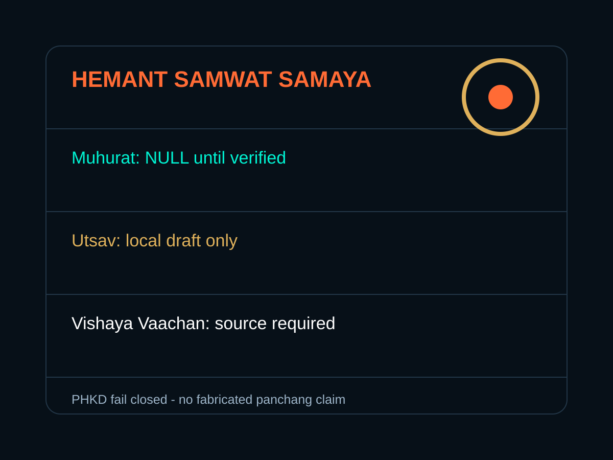

Use this page when the app needs a visual landing before runtime, catalog, or storyboard navigation.
Image Landing
Radio Vaigyaaniq Visual System
A visual-first landing surface for the Radio Vaigyaaniq archive. It promotes only local draft image assets, preserves source paths, and leaves audio, payments, and production claims as NULL.
Visual Assets
12
images + covers + icons shown



Station Covers
No generated audio, payment, stream, scan, or production readiness claim is made from this surface.
Move from this visual entry into tuner, station, Samaya, social, and evidence surfaces.
Evidence Boundaries
| Scope | Status | Evidence Path |
|---|---|---|
| Hero bitmap assets | existing-local draft | /radio-html/assets/radio-vaigyaaniq-landing-hero.png/radio-html/assets/radio-vaigyaaniq-divine-hero.png |
| Generated SVG assets | generated-draft | /radio-html/assets/images/radio-html/assets/covers/radio-html/assets/icons |
| Audio assets | NULL | /radio-html/assets/audio/PHKD_AUDIO_PLACEHOLDER.json |